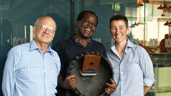
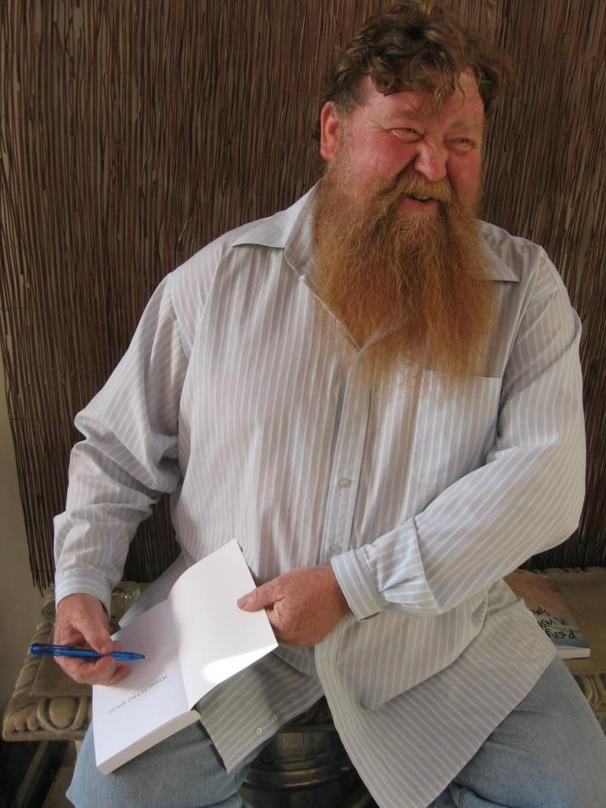
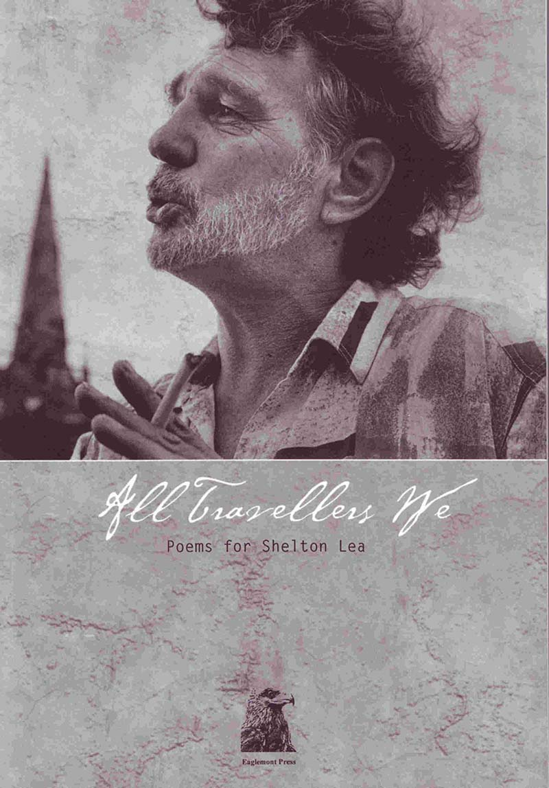

blackpepperpublishing.com
STEPHEN EDGAR WINS THE 2013 INAUGURAL AUSTRALIAN CATHOLIC UNIVERSITY LITERATURE PRIZE FOR HIS POEM ‘THE DANCER’ On 28 August 2013 Stephen Edgar won the inaugural Australian Catholic University Literature Prize ($7,000 prize) for his poem ‘The Dancer’ reproduced below: The Dancer I soon had that routine: Wake; eat; chlorpromazine; Day room; eat; medication; take a turn Around the grounds; repeat; Patches of sleep; wake; eat... And so on. There was nothing else to learn. I strayed, unpresent and askant, One among all the mutually irrelevant. Irrelevant, askance: Such is the vigilance Of those who quit the kingdom of the sane. Work, the great world’s affairs Are nothing to them. Theirs Is tendance on the crack in a window pane, A sister’s enigmatic smile Years past, a headline that conceals a secret file, Marooned on their own islands Of individual silence. One day in the refectory as I, Hazed with an inward stare, Sat vacant on my chair, I felt a sudden presence occupy The next—our shoulders close, but held Apart, like two magnetic norths, pressed and repelled. And stirring to advance A slight and sidelong glance, I glimpsed her in a floral dressing gown, Her hair a dusty blond. She did not look beyond Her own held space, and maybe had sat down At random, not because she chose Especially me to sit beside, from all of those. And yet she was aware Someone, something, was there— Not from that outer realm of sense and health; Rather, a witness, or A co-conspirator From her imagined, inner commonwealth. What she did then played out the script She wrote there and alone could fathom and decrypt, An act of her sick mind, And work of art, to find And fashion some small order in the chaos. She rose, and checked to see That I (or one in me Whom she projected from her conjured dais) Was looking at her and, assured My eyes and my attention watched with one accord, Began to spin tiptoe In balanced vertigo, A dervish, arms outstretched, her body pending In what seemed, as she wheeled, To be its own force field, Sweet as the honey from the sun descending Through the refectory glass, exiled But sanctioned in that light, inviolable, wild, Her whirling fingertips’ Centripetal ellipse Drawing every glimmering shard and shiver Of the mind-shattered day To one restored array: What she was bound in madness to deliver. Dark paean. I, who months alone, It felt, inhabited my own exclusion zone, Watched and bore witness to The beauty that she drew, The wounded state of grace she verified— Last gift from my unwell Hallucinated cell, I thought. The dance was done. I turned aside, And back, and she was gone, and where She’d been—a vortex crackled in the vacant air. This poem is based on a passage in an autobiographical essay by John Burnside, entitled ‘Who Chose Them?’, which appeared in the London Review of Books, 10 September 2009. VIVIAN HOPKIRK DIES On Friday 31 May 2013 Vivian Whiteley Hopkirk author of Meditations of a Flawed Groom, the first novel published by Black Pepper, passed away suddenly. He will be missed. HOMER RIETH WINS THE 2013 MAX HARRIS POETRY AWARD FROM THE UNIVERSITY OF SOUTH AUSTRALIA Homer Rieth has won the Max Harris Poetry Award (with a $3,000 prize) for his poem ‘Ode to Evening’. Judith Beveridge and Kevin Brophy were the judges. Their comments were: A poem
that manages to be musical, receptive to the world, deeply metaphoric,
and incisive about values all at once. The sustained rhythm, repetition
and detailed imagery are beautifully alluring and hypnotic. The poet
keeps the poem buoyant and elegant through use of long-breathed line
that enacts time's cyclical movements. The poet demonstrates exquisite
control of craft and subject matter. The poem is reproduced below: Ode to Evening On a Theme by Walt Whitman for Ken Smeaton
The streets keep to
themselves, calm, unperturbed, almost halcyon you could say... they mirror the spirit of the moving-water silences of Golden Plains, descending over Navigators in the slipstream, drifting into rain— quiet as cloud-flecks above Brown Hill and Mount Helen, floating by (where the towers are watchers of the clay pans)... quiet as the afternoon light turning alluvial... quiet as the cumulus milting over Mount Emu... and suddenly it is evening— it puts the minds of ghosts to rest—the air being cool and clear and almost windless... you could call it a perfect evening (in its way) only now familiar things seem stranger than strangeness itself, and that which was the wheat, has become the chaff— and truly I would say, ‘hope springs...’ as if it were a mantra, were it not that the word ‘eternal’ (sounding more preternatural than it used to) catches on the tongue, as unremitting as tomorrow— and yet they are still there, Napoleons, Rokewood, the road to Cape Clear— sequestrated in time, like these trees, serried and canopied in their orders of stillness, in the auroras of evening above Memorial Arch—where the dead are honoured in their stoic refusals— yet, to trees it must seem that change is all—the irremediable vanity, and since all things are things of rise and fall, can anything ever reconcile with itself, or leave its trace in the dust of the sempiternal?— only trees themselves, perhaps, the grace of their introspections, as seen among the elms and maples ofWindermere and Ascot Street—with their candelabras of perfect cut, their leafy polyhedrons of shade—a life beyond the human world; in the Botanic Gardens, the prime ministers seek leave to cross, on a point of order, that last threshold of nostalgia—to become like these trees (Ashbery’s or ours?) monumental, you might say—but as it is, they resemble the 21stcentury on the make—and all the while on Webster Street it is evening and it seems to me the streets are still keeping to themselves— calm, unperturbed, almost halcyon, you could say... and now the lake water birds are coming into their own reflection, and from narrow synclines and anticlines of bluestone I hear young boys on their skateboards, curling the concrete, cutting it fine, as intricate as the future— I doubt not that Mount Disappointment still appeals, since it never fails to disappoint—and English gardens, retreating into orders of virtue, are still orders of obsession, for the idea of magnolias may at any moment again take hold of the mind—perhaps it is not the words we cannot say, but the words we cannot find, that undo us—and we shall be, like shadows cast by shadows, what we have failed to become—and that is no small thing, to watch the world we have known and loved, unraveling— for now, in ‘the bunker’, day after day, I am a book that is being remaindered, a periodicity in which the rarefaction of all elements has been arrived at, with zero resistance— the linear accelerator moving with animal patience, rotates its tuned-cavity through routines of high voltage waves— the light is ‘Mariana Trench’ rather than ‘meadow’ green, unnerving lifelong symmetries— thus you may understand how I am minded to dwell upon the moving-water silences of Golden Plains, in the slipstream—for when evening falls, it is then you begin to see what they mean, the words in the line, ‘Night’—as Walt hymned it—‘sleep, death and the stars.’ In ‘A Clear Midnight’, their mysteries are unending, their origins are spoken for and were, before the world began—in a way that we may never fathom—they are calm, unperturbed, almost halcyon, you could say. SHELTON LEA VIDEO AVAILABLE Robert Price has made the video Shelton Lea 1946-1995, The extraordinary life of Shelton Lea which can be viewed at: http://vimeo.com/33395484. STEPHEN EDGAR MAKES A NOVEL CONRIBUTION TO THE RAILWAYMAN’S WIFE (ALLEN & UNWIN, 2013) Stephen Edgar tells us: “Some
months ago I was contacted (through the mediation of Michelle de
Kretser) by the novelist Ashley Hay, who was working on a new novel in
which one of the main characters was a poet, and a poem written by him
is central to the plot. She attempted to write the required poem
herself but realized that it wasn’t good enough, so, at her publisher’s
suggestion, she decided to seek out an actual poet to provide the
required poem. That’s where I came in; she sent me the poem she had
written and I set about turning it, to the best of my abilities, into a
real poem - or at least something that with the necessary suspension of
disbelief a reader could accept as a genuine poem in the context of the
novel. This I did, and the novel, The
Railwayman’s Wife,
has just been published by Allen and Unwin, with acknowledgement of my
contribution, and also with an epigraph from “Nocturnal” [from History
of the Day] : ‘It’s
not what we forget / But what was never known we most regret /
Discovery of.’”
AN IMAGINARY MOTHER IS THE AGE PICK OF THE WEEK FOR NON-FICTION An Imaginary Mother has been chosen as The Age Pick of the Week for Non-Fiction, 23 February 2013.. MACAULEY PUBLISHED IN THE UK AND TURKEY, ‘A HAIR OF THE DOG’ FROM OTHER STORIES BROADCAST ON RADION NATIONAL Wayne Macauley’s new novel The Cook published with Text Publishing has been republished by Quercus (UK) and Ithaki (Turkey) (Text has also republished Blueprints for a Barbed-Wire Canoe and Caravan Story). Other Stories by Macauley is still available at Black Bepper) - the story ‘A Hair of the Dog’ from Other Stories has been broadcast on Radio National’s Sunday Story. THIS WOMAN BY ADRIENNE EBERHARD SHORTLISTED FOR THE 2013 TASMANIA BOOK PRIZE FOR BEST BOOK This Woman, the collection by Tasmanian poet and editor Adrienne Eberhard, has been shortlisted for the 2013 Tasmania Book Prize for Best Book. COLIN DUCKWORTH DIES Colin Duckworth, author of Summer Symphony, has passed away in December 2012 after a long and eventful life. His obituary can be found here. JENNIFER HARRISON APPOINTED TO BOARD In late 2012 Jennifer Harrison has been appointed a board member of the new International Poetry Studies Institute based at the Donald Horne Centre for Research, University of Canberra. MIRRANDA BURTON AT NONFICTIONOW AT RMIT UNIVERSITY Mirranda Burton, author of Hidden, appeared in a panel discussion on Graphic Narratives for Nonfiction at the NonfictioNow Conference on Friday November 23 2012. MAHER ABOU ELSAOUD INTERVIEWED ABOUT HIS NOVEL CAIRO PARIS MELBOURNE ON NILE TV BREAKFAST SHOW Maher Abou Elsaoud was interviewed about his novel Cairo Paris Melbourne on the Nile TV Breakfast Show on 10 October 2012. HOMER RIETH WINS $10,000 RESEARCH GRANT FOR THE GARDEN OF EARTHLY SORROWS Homer Rieth author of the epic poem Wimmera has received an Arts Victoria Arts Development program grant for costs associated with travel, research and field work for his epic poem The Garden of Earthly Sorrows, featuring the Murray Darling basin, currently under development. MIRRANDA BURTON AUTHOR OF HIDDEN AT THE MELBOURNE WRITERS FESTIVAL Mirranda Burton author of the graphic novel Hidden appeared at the Melbourne Writers Festival working live as Illustrator-in-Residence on 31 August 2012 at the Atrium, Federation Square. JENNIFER HARRISON INSPIRES WORK BY VISUAL ARTIST ANNETTE IGGULDEN ‘Re-inscriptions of ‘Aus-lan’ appeared in Cordite Poetry Review on 23 June 2012. The poem ‘Aus-lan' by Jennifer Harrison (which appears in Michelangelo’s Prisoners and Colombine; New & Selected Poems) inspired artist Annette Iggulden to produced the paintings Soundscapes I to IV (which were exhibted at the Watters Gallery, Sydney. MIRRANDA BURTON AUTHOR OF HIDDEN AT NEW ZEALAND WRITERS FESTIVAL Mirranda Burton author of the graphic novel Hidden appeared at the Going West Books and Writers Festival in September 2012 in Titirangi New Zealand. MIRRANDA BURTON’S HIDDEN WINS THE 2011 AUREALIS AWARD FOR GRAPHIC NOVEL Mirranda Burton’s Hidden has won the Aurealis Award for Graphic Novel (along with the illustrated book The Deep), announced on 12 May 2012. JENNIFER HARRISON WINS THE CHRISTOPHER BRENNAN AWARD FOR EXCELLENCE IN POETRY Congratulations to Melbourne poet Jennifer Harrison. On Friday 29 March 2012 she was awarded the national Christopher Brennan Award for Poetry. The Michael Meszaros designed bronze plaque is given annually to a poet who has written work of sustained quality and distinction. Administered by the Fellowship of Australian Writers (Victoria) and sponsored by Sally Dugan, the award commenced in 1973 and previous winners have included Les Murray, Bruce Dawe, Judith Rodriguez, Judith Wright and Dorothy Porter. Jennifer has edited a number of poetry anthologies including Motherlode: Australian Women’s Poetry 1986-2008 (with Kate Waterhouse) and has had five collections of poetry published by Black Pepper. In 1995 she won the Anne Elder Award for her first collection, Michelangelo’s Prisoners. Her most recent collection Colombine; New & Selected Poems (Black Pepper, 2011) was shortlisted for the Western Australian Premier’s Award. A child psychiatrist who has specialised in developmental disorders such as austism, Dr Jennifer Harrison runs the Developmental Assessment Program for children and adolescents at the Alfred Hospital, Melbourne. She has recently taken a research position at the Dax Centre, University of Melbourne, the national collection of mental health art. Together with fellow poet Jessica Raschke she will be curating poetry for the collection. MIRRANDA BURTON’S HIDDEN TO BE PUBLISHED IN FRENCH Mirranda Burton’s Hidden will be published by publisher La Boîte à Bulles in France. MIRRANDA BURTON’S HIDDEN NAMED A BEST GRAPHIC NOVEL OF 2011 BY READINGS BOOKS “In a simple yet effective visual style reminiscent of Persepolis but wholly its own - and peppered with some pictures so vivid as to be photographic - local artist Mirranda Burton draws on her time spent as an art teacher for those with intellectual disabilities. Her tales are hopeful, dramatic, always emotionally involving, and never condescending.” - Fiona Hardy, Readings Carltonxx JENNIFER HARRISON CITED AS A BOOK OF THE YEAR 2011 IN AUSTRALIAN BOOK REVIEW BY PAUL HETHERINGTON “In recent years, New and Selected Poems have proliferated in Australia. One of the best is Jennifer Harrison’s Colombine: New and Selected Poems (Black Pepper, 2/11), which I have been reading with great pleasure. It demonstrates a fine capacity for registering sensuous life while taking the reader on a variety of compelling intellectual and imaginative journeys.” - Paul Hetherington, Australian Book Review JENNIFER HARRISON’S COLOMBINE SHORT LISTED FOR THE 2010 WESTERN AUSTRALIAN PREMIER’S BOOK AWARDS “A major contribution to Australian poetry which demonstrates Harrison’s evolving career and mastery. Its depth of intellectual and emotional registers, in addition to its sustained craft, makes this poetry demanding yet also immensely rewarding and enjoyable..” ALAN LONEY ANNOUNCED THE WINNER OF THE 2011 JANET FRAME AWARD FOR POETRY FOR LIFETIME ACHIEVEMENT Alan Loney received the Janet Frame Award on 6 May 2011. SHELTON LEA AND JENNIFER HARRISON TO FEATURE IN POETICA Shelton Lea and Jennifer Harrison will be featured in Poetica on ABC Radio National. Sketches of Shelton will be the 7 May 2011 show. On 26 May Jennifer Harrison will be one of the poets highlighted in Verbal Medicine, among Australian and New Zealand poets who are also general practitioners, physiotherapists, nurses, and psychologists. Poetica is Presented by Mike Ladd on Saturday at 3.05 pm and is repeated at 3.05 pm on the following Thursday. EDGAR AND HARRISON IN ISLAND MAGAZINE Stephen Edgar and Jennifer Harrison have had new poems published in the current issue of Island magazine, No. 124. OTHER STORIES BY WAYNE MACAULEY CHOSEN AS THE AGE PICK OF THE WEEK (FICTION) AND REVIEW OF THE WEEK (BOOKS) AND INTERVIEWED IN VERITY LA Click here to go to the reviews of Other Stories in The Age and The Sunday Age (and The Weekend Australian and 3RRR and Crikey) and the interview in Verity La. Other Stories is to be launched this Tuesday (details immediately below). OTHER STORIES BY WAYNE MACAULEY LAUNCHED Emmett Stinson (short story writer, academic and publisher) launched Other Stories by Wayne Macauley on Tuesday 26 October at the North Fitzroy Arms In
the dog days of summer, when the earth rolls and sighs and a heat
shimmer wobbles and distorts everything in the middle distance and
beyond, who has not wanted, as evening falls, to take their mattress
and pillow outside and sleep like a well-heeled vagabond under an open
sky? In Boxstead Court, in Keilor Downs, as evening fell and the stars
came out on just such a night as this, Michael Ebeling, the panel
beater, who had not had a very good day, decided to do exactly that. He
took the mattress from his bed and laid it down in the street, away
from the fluorescent streetlight that threw down a cold-hearted glow.
He took off his shirt, his pants, his socks and lay with his arms by
his side.
“For anyone who thrills to a hypnotic prose style and incisive social satire, I would urge you to discover his work!” Martin
Shaw, Readings Monthly
TESTIMONY BY GRAHAM HENDERSON AT THE NORTH MELBOURNE TOWN HALL Graham Henderson’s play Testimony played at the rehearsal room in the Fringe Hub from 24 September-9 October. ‘A late-show of demi-god dreams.’ Directed by Suzanne Chaundy, performed by Matt Crosby. Testimony is a fitting return to the theatre for Graham Henerson. An often savage play, Testimony is leavened by poetry and a deep compassion for the oppressed. WIMMERA RECEIVES NOTICE IN THE CHIMAERA NEWS Homer Rieth’s Wimmera received head notice in the online poetry magazine The Chimaera (click here). STEPHEN EDGAR FEATURED GUEST POET AT THE BRETT WHITELEY STUDIO POETRY READING (SYDNEY 26 SEPTEMBER) Stephen Edgar was guest poet at the Brett Whiteley Studio for the Poets Union monthly poetry reading at 2 Raper Street, Surry Hills. WAYNE MACAULEY INTERVIEWED ON 3RRR Wayne Macauley’s Other Stories, was reviewed by Emmett Stinson on radio 3RRR (podcast available soon at http://rrrfm.libsyn.com/rss/Breakfasters) and also on Emmett Stinson’s Known Unknowns blog. JACK HIBBERD’S POETRY BROADCAST ON RADIO NATIONAL’S POETICA PROGRAMME ABC Radio National’s Poetica broadcast a feature on the poetry of Jack Hibberd, with twenty poems from The Genius of Human Imperfection and Madrigals for a Misanthrope on Saturday 21 August 2010 (available at www.abc.net.au/rn/poetica/) HOMER RIETH SHORTLISTED FOR THE AGE POETRY BOOK OF THE YEAR 2010 AND THE BLAKE POETRY PRIZE Homer Rieth was shortlisted for The Age Book of the Year 2010 for Poetry: see: Readings website Homer Rieth was also shortlisted for the 2010 Blake Poetry Prize (run by the NSW Writers’ Centre) for a new poem (‘Marian Vespers’) from his forthcoming shorter collection, 60 Motets: see: NSW Writers’ Centre BLACK PEPPER AUTHORS FEATURED AT MELBOURNE WRITERS FESTIVAL Jennifer Harrison, Wayne Macauley, Homer Rieth and Hugh Tolhurst featured at the 2010 Melbourne Writers Festival: Friday
27 August 2010, 5:30 PM, ACMI Studio 1 (Federation Square)
Event Name: Out of the Blue Panelists: JENNIFER HARRISON, Kevin Brophy, Katherine Gallagher Topic: Three award-winning poets conduct a fresh, literal examination of that hoary question: ‘Where do you get your ideas?’ Kevin Brophy, Jennifer Harrison and Katherine Gallagher on inspiration and the creative process. Friday 27 August 2010, 2:30 PM, BMW Edge (Federation Square) Event Name: Writing Country Panelists: Alex Miller, Jeremy Chambers, HOMER RIETH Topic: Life on the land makes for dramatic and moving stories, but do you have be from the country to capture its essence? Alex Miller, debut novelist Jeremy Chambers and Homer Reith lead us beyond city limits in search of the rural voice. Sunday 29 August 2010, 10:00 AM, Free at Feddish (bar/eatery at Federation Square) Event Name: The Morning Edition Panelists: Emili Rosales, WAYNE MACAULEY, Evelyn Juers, Kirsten Tranter Topic: Kickstart the day with a piping hot cup of literary goodness as a specially selected blend of writers discuss and read from their work. Sunday 29 August 2010, 6:30-7.30 PM, Free at Festival Club, ACMI (Australian Centre for the Moving Image) (Federation Square) Event Name: Bittersweet launch and arts poetry project Readings by: Jessica Raschke, Justin Clemens, Michael Farrell, JENNIFER HARRISON, Andy Jackson, Pi o, Judith Rodriguez, HUGH TOLHURST and Ouyang Yu Topic: Kickstart the day with a piping hot cup of literary goodness as a specially selected blend of writers discuss and read from their work. Bittersweet is a playful intervention into everyday life, bringing poetry and audiences together over a cup of coffee. It presents in the form of a pencil-shaped scroll, served free of charge to audiences when they order coffee or tea from most Fed Square eateries. The unfurled scroll reveals a poem (or an excerpt of a poem) written by one of ten Australian poets. Collect all ten scrolls and enjoy readings by the nine poets involved. ADRIENNE EBERHARD’S POEMS FEATURE IN TRANSLATION ON NEW FRENCH AUDIO LITERATURE SITE SECOUSSE Two of Adrienne Eberhard’s poems from her forthcoming book with Black Pepper, This Woman, have featured in the new online French literary audio journal Secousse (roughly translating as Shake) – ‘The Maze’ and ‘Water Music’. GEORGE DREYFUS’ ‘AN AUSTRALIAN FOLK MASS’ TO BE PERFORMED IN GERMANY The Mass was be performed at St Nikolai-Kirche Prenzlau (Kantor Hannes Ludwig), near Berlin, on 26 and 27 June 2010. George Dreyfus was conductor. The work features in the chapter of George’s book Don’t Ever Let Them Get You! entitled ‘It’s Good To Have Friends In High Places’. ANDREW
SANT POEM FEATURES IN ELIZABET BISHOP’S HOME
DURING CENTENARY YEAR
From elizabethbishopcentenary.blogspot.com 26 April 2010 On
a bedroom wall in the house where Elizabeth Bishop lived as a child
hangs a framed poem - on linen paper - that I wrote several months ago.
It is about my visit to that house in Great Village in April 2006. The
bedroom was little Elizabeth’s.
Let me briefly explain how this came about. Great Village is a long way from where I normally live in Australia. But that April I got lucky. While on a speedy reading tour of the Maritime Provinces - wonderful new territory for me - I met the Halifax-based poet, Brian Bartlett. Our conversation must have drifted to matters relating to EB, especially her relationship with Nova Scotia. I had realised that in all likelihood I might never again be as close to Great Village as I was then but had not entertained the possibility, on this hurried tour, of visiting it, let alone gaining entry to EB’s grandparents’ house. Brian explained how this could be done. As it happened, in a few days I was to join - via public transport - a couple of Canadian poets, David Manicom and David O’Meara, for a reading in Fredericton, New Brunswick. I learned they had a go-anywhere car which would next take the three of us back to Halifax. Great Village, I’d heard, my eyes widening, would be accessible along the way. Good companions, the two Davids didn’t require any persuading to make the detour. It was such a wonderful thing for me to be in places I’d never previously conceived of visiting that I felt I bore a disproportionate amount of the excitement. I hoped to see a moose somewhere but my luck didn’t extend that far. The weather was changeable the afternoon we arrived in Great Village. I remember this because I waited for the sun to make its various appearances, through openings in the clouds, to take my photographs. It was drizzling when we arrived, sunny when we left. The three of us were shown into the house by Meredith and Robert Layton, holders of the key and with whom I’d previously made contact. The poem, which I called ‘Marvel’ gives some idea of the intensity of the experience. Here it is: Unexpectedly, one morning, I’m
being driven fast
to Great Village, Nova Scotia, where as a kid Elizabeth Bishop lived - went into the clapboard house, went up to the little room where she slept, or tried to, the sleep of a nascent poet. While, downstairs, her grandparents snoozed by the Little Marvel Stove. Now forever gone! I looked down at the narrow bed, up at the skylight right above it, home of the travelling Milky Way, while nearby roamed - or soon would - the moose she’d see from a bus and, with a trans-continental pen, take a modest twenty years to make, suddenly, marvellous. Why
I wrote the little poem when I did, I don’t know. I suppose poems find
you rather than you find them. The circumstance was unique: I was
enjoying a few glasses of wine one evening when I jotted it down. It’s
the only poem I’ve written while drinking alcohol. I emailed it some
time later to Sandra Barry - who I’d met in Montreal where she
explained her connection with the house - and it was her generous idea
that it be placed on the bedroom wall. When I recall that it is there,
I also recall the overwhelming surprise and delight I experienced on
reading Sandra’s reply. Could a poem ever have found a more suitable
home?
GEORGE DREYFUS ON THE CONVERSATION HOUR George Dreyfus was on The Conversation Hour with Jon Faine, on Thursday 4 March 2010 on Radio 774 ABC - the episode can be heard on their website.  GEORGE DREYFUS’ LAUNCHED AT CHAPEL OFF CHAPEL, 14 MARCH 2010 Kay Dreyfus, of Monash University, launched Don’t Ever Let Them Get You! together with a bravura performance by George together with his son Jonathan and friends. A great time was had by all in the packed audience. For the launch speech, click here. WIMMERA BY HOMER RIETH FEATURED ON ABC1 LANDLINE The Landline website has the show available on its Archive (February 2010) under the title "Homer's Epic" DEBORAH MASEL AT THE PARLIAMENT OF THE WORLD’S RELIGIONS MONDAY 7 DECEMBER 2009 9.30-11 AM Deborah Masel featured at the Parliament of the World’s Religions in Melbourne (2009). The
Torah through Paintings and Poetry
2009 Parliament of the World’s Religions in Melbourne Victor Majzner, Helen Light, Deborah Masel, Rosemary Crumlin, Room 218 Artistic Performance and Panel Discussion ‘For the first time in the history of art, all of the 54 parshot (weekly readings) of the Torah have been depicted visually from a specifically Jewish perspective. Victor Majzner accomplished this feat with his exhibit at the Australian Jewish Museum in Melbourne in July 2008. This illustrated lecture on Majzner’s work will be divided into three parts. First, Majzner will discuss a number of paintings from this series and illuminate their ‘Jewish’ content. He will also discuss some comparisons between his Jewish imagery and Christian images of similar subject matter. Second, poet Deborah Masel will read poems she has written based on the same sections of the Torah. Masel has recently published a book entitled In the Cleft of the Rock. The third part will be devoted to a panel discussion with Victor Majzner, Deborah Masel, Rosemary Crumlin and Helen Light focusing on the visual depiction of the Torah.’ MELBOURNE LAUNCH OF WIMMERA The Melbourne launch of Homer Rieth’s Wimmera was held on 13 October 2009 at the North Fitzroy Arms (296 Rae St, North Fitzroy 3068) by Dr Brian Edwards, editor of Mattoid, poet and critic (Theories of Play and Postmodern Fiction, All in Time and The Escape Sonnets). In launching the book he declared that it was ‘an historical day in Australian literary history’. Homer Rieth has received an Australia Council grant to proceed with his new epic, The Garden of Earthly Sorrows. This one, just to raise the degree of difficulty, is to be accompanied with a full piano score. LOCAL LAUNCH HELD FOR HOMER RIETH’S WIMMERA The local launch of Homer Rieth’s Wimmera attracted interest in his home town of Minyip, Victoria and featured prominently in the Wimmera Mail Times. The launch took place at Hooz on Main on a Friday evening and was a great success. On the following Sunday the Lutheran pastor, Harry Ludwig, held up a copy of Wimmera to his congregation and said ‘I shall now read from the sacred text’. Indeed he did, from page 71. CLIVE JAMES REVIEWS HISTORY OF THE DAY IN THE TIMES LITERARY SUPPLEMENT Read Clive James’ review of he History of the Day on 11 September 2009. HOMER RIETH ON THE CONTEMPORARY EPIC Read excerpts from Homer Rieth’s Ph.D Exegesis on the Wimmera page, now available. DEBORAH MASEL’S IN THE CLEFT OF THE ROCK LAUNCHED AT THE AUSTRALIAN CENTRE FOR JEWISH CIVILIZATION Deborah Masel’s In the Cleft of the Rock; Writings on the Five Books of Moses was launched at the Australian Centre for Jewish Civilisation at Monash University by Sam Lipski AM and Dr Avivah Gottlieb Zornberg on 23 August. Deborah Masel is to be interviewed on Radio National’s The Spirit of Things, in a program to be broadcast shortly after the launch. DAVID COHEN APPEARS IN READINGS AND WRITINGS COLLECTION Readings and Writings; 40 Years in Books (edited by Jason Cotter and Michael Williams), a collection of new Australian short stories from writers who have been involved with Readings over the years, includes a story by David Cohen, author of Fear of Tennis. JENNIFER HARRISON’S ESSAY ON MIND, PHRASE AND FABLE See our Opinion page for Jennifer Harrison’s essay (given at Melbourne University) on poetry and fable. RADIO NATIONAL BROADCASTS WAYNE MACAULEY STORY FROM HIS FORTHCOMING COLLECTION OTHER STORIES ‘The Hair of the Dog’ from Other Stories by Wayne Macauley was podcast on 26 July 2009 on Radio National’s SundayStory, read by William Zappa. MICHELLE CAHILL ON HISTORY OF THE DAY ‘Recently, I’ve been dipping into the elegance and precision of Stephen Edgar’s new collection History of The Day. It’s wonderful for its lyrical and tonal control, challenging and graceful in its syntactical complexity.’ From her website .michellecahill.com. GLASS CATHEDRALS – THE POETRY OF NICOLETTE STASKO ‘Glass Cathedrals – the poetry of Nicolette Stasko’ will be presented on Poetica, ABC Radio National, hosted by Brent Clough and Mike Ladd, at 3.05 PM on Saturday 19 September 2009 (repeated 3.05 PM Thursday). JORDIE ALBISTON BROADCAST ON RADIO NATIONAL POETICA Jordie Albiston talks about her about her writing with Anna Messariti and reads a selection of her poems on Poetica, ABC Radio National, on 30 May 2009 (podcast available). ‘MUSE OF A GODDESS - VITALINGUS’ BLOGSITE COMMENTS ON BLACK PEPPER PUBLISHING From Vitalingus, the very popular blogsite: BLACK PEPPER PUBLISHING WELL
VERSED IN THE 21ST CENTURY
Vitalingus.com 12 May 2009 Black Pepper publishing has arrived at Vita in 2009, with juicy stories, wild and very well placed voices. Black Pepper is the absolute ultimate of what one understands to be genuine brave visionary behavior.. A commitment that is unsurpassed in the publishing world. They are so across loving who they are and so very dedicated to loving what they create, and supporting the writers they have given us. They are sublime and well versed in all that truly matters... and of course all things publishing, profound yet amusing... The Black Pepper publishing team always give their fullness of spirit and love to and for the other. They are impeccable, in their attention to poetry and prose, at this extraordinary publishing house. An Australian publishing journey that now spans two centuries... We must commend and appreciate how far Black Pepper Publishing have come in their journey from the late part of the 20th century into the 21st century. This small publishing venture is based in North Fitzroy, Melbourne, Australia, and is dedicated to nurturing the ‘new flowers’ of Australian prose and poetry writing. See their range of brilliant prolific and tenacious writers and ALL the many successes of the Black Pepper Publishing team... Snuggle down with a Black Pepper Publication, join their mailing list and be with us at the cutting edge of independent publishing in Australia. Support the Australian independent publishing world NOW! Don’t forget to smell the Gardenia, the scent of Black Pepper’s books. THE HANGING OF JEAN LEE TO BE BROADCAST ON RADIO NATIONAL POETICA SATURDAY 11 APRIL 2009 AFTER 2 PM NEWS Poetica is to broadcast Andrée Greenwell’s composed work in full, with libretto by Jordie Albiston and Abe Pogos, based on Jordie Albiston’s book of poems of the same name about the last woman hanged in Australia. STEPHEN EDGAR LAUNCHES PERSONAL WEBSITE Acclaimed poet Stephen Edgar has launched his personal website located at stephenedgar.com.au STEPHEN EDGAR INTERVIEWED BY PAUL STEVENS Paul Stevens of The Chimaera interviewed poet Stephen Edgar (February 2009). Also included are poems from Edgar and an audio reading (the audio reading is located towards the bottom of The Chimaera webpage) from Edgar’s CD Photography for Beginners. CLIVE JAMES ON ‘MAN ON THE MOON’ FROM OTHER SUMMERS Clive James’ essay on this poem from Stephen Edgar’s recent collection (click on link to left) is insightful and informative. The review appeared in Poetry (Chicago) in January 2009. LAUNCH OF POSING IN VAST SPACES Peter Murk’s novel Posing in Vast Spaces was launched by Julian Burnside, President of Liberty Victoria and author of Wordwatching: Fieldnotes of an Amateur Philologist on 13 September 2008 at Claypots Seafood Restaurant in St Kilda.  Peter
Murk at Claypots
NEW SHELTON LEA INSPIRED TITLE Eaglemont Press held a successful launch of All Travellers We; Poems for Shelton Lea, a collection of tribute poems on the author of Nebuchadnezzar. The large audience listened to readings by contributors and music by Lauren Williams (singing poems by Shelton Lea), which added to the special flavour of the night, held at Dante’s bar in Fitzroy on 21 August 2008. Black
Pepper is distributing All
Travellers We (RRP $AUD20.00)
 JORDIE ALBISTON SHORTLISTED FOR BEST MUSIC THEATRE SCRIPT IN VICTORIAN PREMIER’ S LITERARY AWARDS 2008 Jordie Albiston, together with Andrèe Greenwell and Abe Pogos, have been shortlisted for The Hanging of Jean Lee, based on the book published by Black Pepper in 1998. PETER MURK’S POSING IN VAST SPACES THE AGE PICK OF THE WEEK Posing in Vast Spaces joins Blueprints for a Barbed-Wire Canoe and The Invention of Everyday Life as an Age Pick of the Week. ALAN LONEY ON RADIO 2SER Alan Loney discussied The printing of a masterpiece with Benedict Taylor on Monday July 14 on ‘Final Draft: Books and Writing’, NSW Radio 2SER (podcast here). PETER MURK ON RADIO 3RRR AND 3CR Peter Murk discussed Posing in Vast Spaces with: Jan Goldsmith on June 19, at 11.30 am on ‘Published... or not,’ Radio 3CR and Alicia Sometimes on June 25, at 1.40pm on ‘Aural Text’, Radio 3RRR. WAYNE MACAULEY ON RADIO NATIONAL’S BOOK SHOW Wayne Macauley appeared on The Book Show on the 10am Tuesday 17 June session talking about his essay on publishing, ‘The Other Way,’ which is available on the Black Pepper website as part of a new feature on Black Pepper Opinion. The podcast can be located at: http://www.abc.net.au/rn/bookshow/stories/2008/2278159.htm 3CR RADIO INTERVIEW WITH ALAN LONEY (THE PRINTING OF A MASTERPIECE) Alan Loney was interviewed about The printing of a masterpiece on Radio 3CR on 5 June 2008 at 11.30 am on ‘Published... or not’. THE PRINTING OF A MASTERPIECE BOOK LAUNCHES Alex Selenitsch, architectural designer and art critic, launched The printing of a masterpiece at the Leigh Scott Room (featuring Robert Menzies’ library) in the Bailleu Library of the University of Melbourne. A New Zealand launch was also held on 20 May 2008 at Parson’s Bookshop, Auckland. Alan Loney was introduced by speaker Peter Simpson (Director, The Holloway Press, University of Auckland). ADRIENNE EBERHARD’S ‘MADONNA’ APPEARS IN SEE THE VIRGIN BLEST ‘Madonna,’ from Agamemnon’s Poppies by Adrienne Eberhard, has appeared in Barry Spurr’s new book, See the Virgin Blest; The Virgin Mary in English Poetry (Palgrave Macmillan, 2007). The full excerpt can be found on our Agamemnon’s Poppies webpage. DREAMING TRANSPORTATION PARTS ONE AND TWO ON POETICA (RADIO NATIONAL) Radio National Poetica (www.abc.net.au/rn/poetica/index WAYNE MACAULEY’S CARAVAN STORY CITED AS A BOOK OF THE YEAR (2007) IN READINGS MONTHLY My
discovery of the year was Brunswick author Wayne Macauley. For anyone
who thrills to a hypnotic prose style and incisive social satire, I
would urge you to discover his work! His most recent novella
is Caravan
Story.
Martin Shaw, Readings Monthly, December
2007-January 2008
DAVID COHEN’S FEAR OF TENNIS AND STEPHEN EDGAR’S OTHER SUMMERS CITED AS BOOKS OF THE YEAR (2007) West Australian writer David
Cohen offered a sprightly, original novel titled Fear of Tennis
(Black Pepper), in which a mild-mannered courtroom sound recordist and
sports-hater gets enmeshed in high-tech athleticism as an act of
atonement for a wrong he committed a dozen years before.
Les Murray, The Age, 8 December
2007
and The West Australian In Other Summers (Black Pepper), Stephen Edgar’s poems match sumptuous images with steely technique to bring us pleasure on every page. Michelle de Kretser, The Age, 8 December
2007
PHILIP GRUNDY DECLARES JOHN VASILAKOS’ THE SET-UP AN AUSTRALIAN MASTERPIECE IN A FORTHCOMING NEOS KOSMOS ISSUE Read the article on The Set-Up, ‘Sounding the Depths.’ DAVID COHEN’S FEAR OF TENNIS CITED AS A BOOK OF THE YEAR (2007) IN THE TIMES LITERARY SUPPLEMENT David Cohen’s Fear of Tennis (Melbourne,
Black Pepper) stood out among the novels I read. A sports-hating
courtroom recordist enmeshes himself in high-tech athleticism to atone
for an old wrong, and the rabbinical underpinnings of the original tale
are discreetly conveyed.
Les Murray, The TLS, 1
December 2007
BLACK PEPPER MAIL OUT Black Pepper has a regular mail-out for events and launches, both by email and snail mail. If you are interested please contact us and we will add you to the list. |
| t |